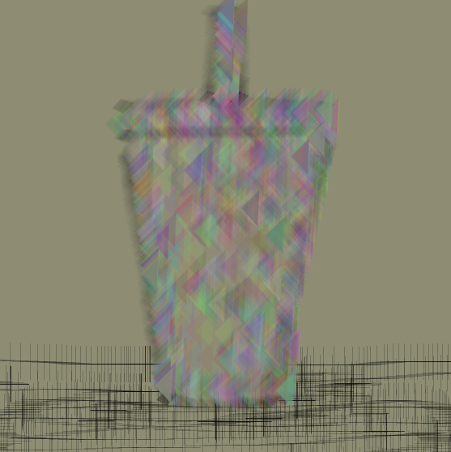
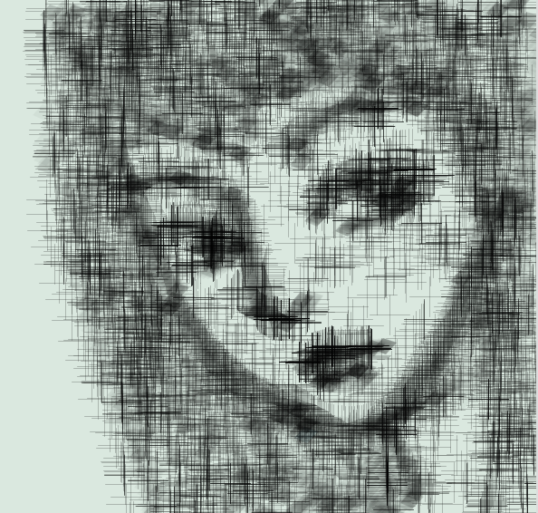
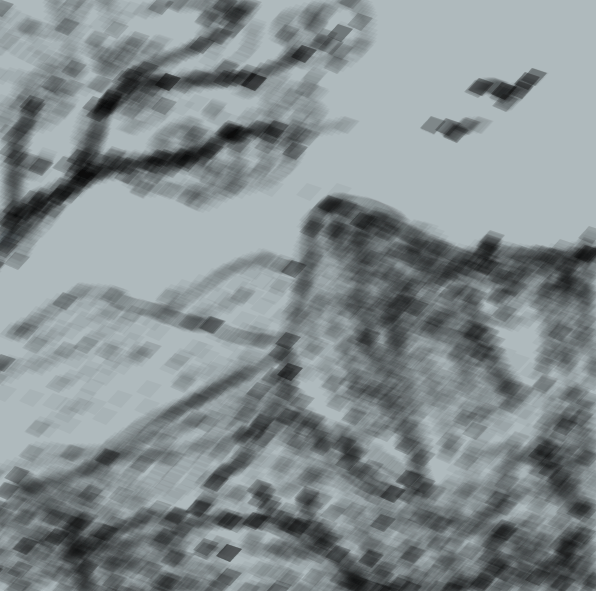
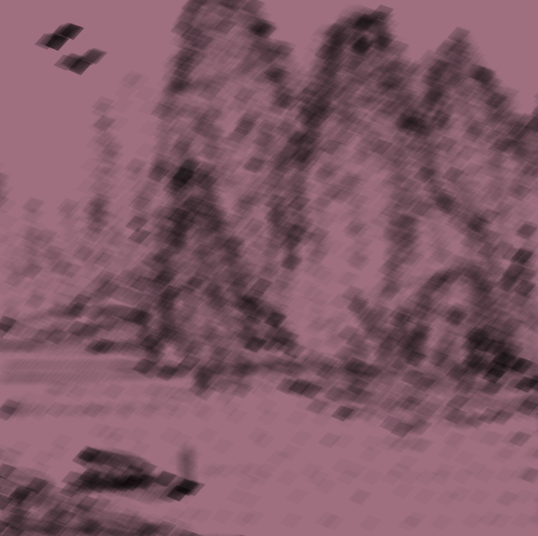

Phuong Ngo's Project 1
"You just have to find the intersection point of what you like to do, what you are good at, and what can earn you enough money to keep doing whatever you like; only then you can stay happy and motivated everyday."
Sketch 1
My first processing sketch is an arrow moving in sin equation running straight toward a bunch of circles that were built into colorful rows. I really like the HSB mode, so I just decided to make it into separated rows of color schemes. Somehow this image makes me think of an individual, a loner, trying to blend into the crowd. It has been a really long while since the last time I did any type of coding, so although I was super nervous about it and it took me a lot of time to slowly figure things out, the whole process was very enjoyable at the same time.
Play video
See code
Sketch 2
My second sketch for the exercise 2 came from a quote that I used to make as my bio "Head in the cloud, heart on the ground". At that time, my personality was a bit flickle, as I did not really know what to think or to feel toward a specific situation. The whole piece that I made for this assignment, however, somewhat gave me a peace of mind, with the floating and bouncing dots in the sky and the quiet starry sky. You can interact and make the full sentence appear by pressing the mouse, also the night sky can be changed into dawn by holding a key button at the same time.
Play video
See code

Sketch 3
At the time when I was trying to think of an idea of what to draw for my third assignment, I had a dream of me being a black cat walking on the street, then suddenly there was this cute little mouse appeared in front of my eyes running a round. In that same moment, cherry blossoms falling everywhere; and I woke up thinking that it's probably a weirdest yet such a pretty dream I ever had. That's how I came up with making this sketch. I would like to give a big thanks to Thadeus who shared his code on Discord! I was able to learn a lot and also able to create the same petals falling effect that I wanted.
Play video
See code
Project 1
My project 1 started with a triangle-shaped rainbow brush that I made while messing with the previous codes. Then I decided I want something that can create a cross-hatching effect while drawing, and ended up with the second brush. The third one was made when I was looking at some traditional ink painting. Those landscape paintings made from ink caught my eyes right away. So I chose to make a rhombus shaped brush with enough transparency to give out the same effect as painting with ink. You can press 1 2 or 3 to change the brush, press E to switch into eraser, or press B and mouse click to randomly change the background color. Press X to erase everything and go back to a white background.
Play video
See code
Brush 1 + 2 + 3

Brush 1 + 2

Brush 3

Brush 3

Collage